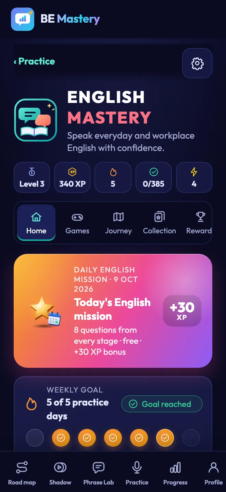
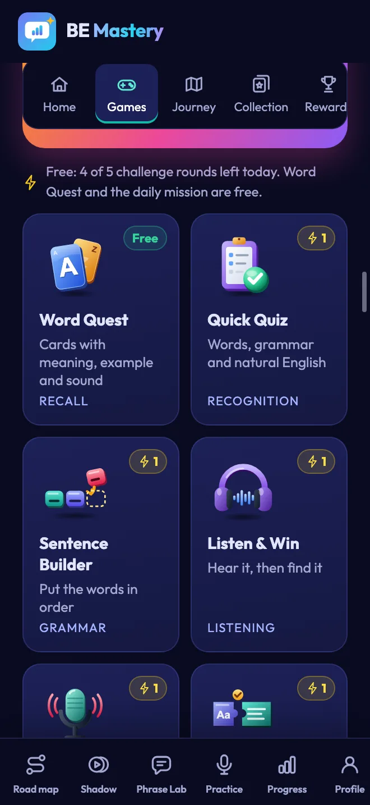
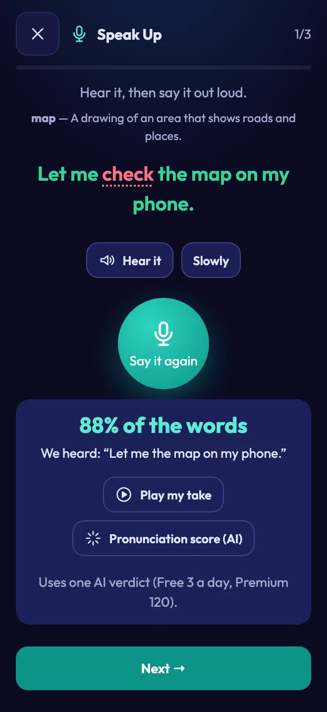
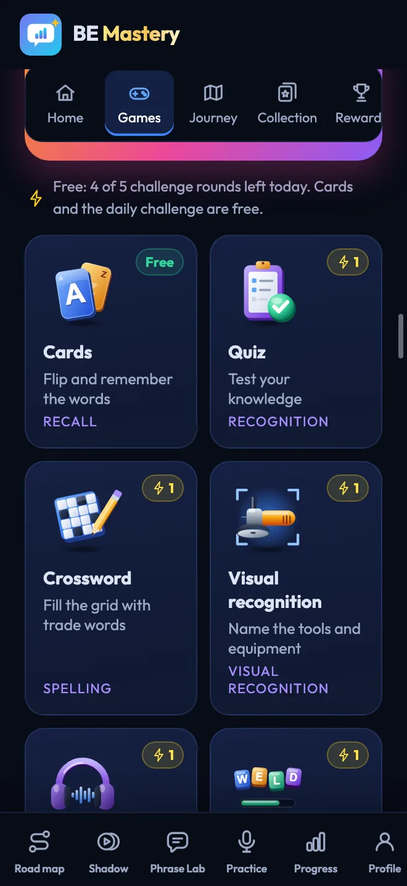

Chegando ao iPhone
O app para iPhone está em análise pela Apple. Uma única conta vai levar seu progresso para os dois celulares.
Pratique com a IA. Imite falantes reais. Pratique com pessoas reais. Construa a confiança para conversas reais.
Baixe o BE Mastery
Grátis no Android, em breve no iPhone · Entre com Apple, Google ou e-mail · Seu progresso segue você entre os celulares · Orientação em 15 idiomas.


As novidades mais recentes do BE Mastery.
O app para iPhone está em análise pela Apple. Uma única conta vai levar seu progresso para os dois celulares.
Um toque para fazer backup do seu progresso e levá-lo entre iPhone e Android.
Sua sequência, a etapa do dia e suas Recomendações, sem abrir o app.
Cada gravação toca de volta no momento em que você para, e o Phrase Lab lê seu texto em voz alta.
Dez profissões, simulações de trabalho, coaches de entrevista e frases reais de oficina para imitar.
Veja cada frase do Shadowing no seu idioma e em fonética, palavra por palavra.
Rodadas cronometradas com um parceiro real, e um relatório privado da sua parte da chamada.
English Mastery e Welding Mastery: oito jogos cada, uma missão diária e medalhas de habilidade.
Saber inglês não é o mesmo que falar com confiança.
Você lê sem problemas. Você acompanha a reunião. Então chega a sua vez, e a frase que você tinha preparado chega um instante tarde demais — então você diz a versão mais curta e mais simples no lugar.
Essa distância não é falta de conhecimento. É falta de prática. Ela se fecha do mesmo jeito que se fecha para músicos e atletas: um pouco, em voz alta, todos os dias.
Uma sessão guiada por dia durante doze semanas, em quatro etapas curtas. Você não escolhe o que estudar. O roteiro já sabe. Você só precisa aparecer e falar.
As expressões do dia, ou um falante real, e a situação em que elas são usadas.
Imite até que o ritmo pare de parecer estranho.
Diga com a sua própria voz. É essa parte que conta.
A impressão que você causou, o que corrigir, suas frases reconstruídas.
Abra o app e sua página já está esperando: a sessão do dia primeiro, depois a prática que combina com ela.

Pratique uma conversa real — a entrevista, a reunião diária, a negociação de salário — antes de ela acontecer.

Fale com outro aluno que está praticando agora mesmo, ou ligue para ele em tempo real.

Diga do seu jeito, ouça como se diria em uma reunião de diretoria.

Exercícios curtos e interativos sobre a gramática que você realmente usa ao falar.

As palavras em que você travou voltam até deixarem de ser um obstáculo.

Doze semanas, um dia por vez. Você sempre sabe o que vem a seguir.
Tem muito mais dentro do app do que mostramos aqui. Abrir no app
Escolha uma palestra, entrevista ou aula real. Assista com as palavras se iluminando, imite parágrafo por parágrafo, depois diga sem olhar. Quando conseguir, ela é sua.
O Shadow Studio está no app. Obter o app
So here is where we are. The design is finished, and testing starts on Monday.
The one risk is the supplier, and I will know more by Thursday.
Iwanttomakesurewearealignedbeforewecommittothedeadline.
Je veux m'assurer que nous sommes d'accord avant de nous engager sur l'échéance.
/aɪ wɑnt tə meɪk ʃʊr wi ɑr əˈlaɪnd bɪˈfɔr wi kəˈmɪt tə ðə ˈdɛdˌlaɪn/
O clipe repete neste parágrafo. Toque em uma palavra para ouvi-la, traduzi-la, depois grave.
Busque por tema, ou use a escolha da semana do seu plano. Qualquer link de vídeo também funciona.
Cinco rodadas, cada uma com menos ajuda, até a frase ser sua.
Cada relatório é guardado, com as palavras em que você travou, para você continuar de onde parou.
A biblioteca, Ver, Shadowing e Desafio fazem parte do Inglês geral. A tradução e a pronúncia são geradas por IA e exigem conexão. O relatório acima é um exemplo; o seu é construído a partir da sua própria gravação.
responsible for + -ing · since + um ponto de partida exige have been + -ing
Fale por um minuto sobre seu projeto, sua função ou a atualização que você deve a alguém. O relatório mostra a impressão que você causou, corrige o que você errou, reconstrói suas frases e dá a você palavras melhores. Depois o coach lê tudo para você.
Ensaie no seu celular, em voz alta. Obter o app
Veja quem mais está praticando agora e faça a tarefa de fala do dia junto — em turnos curtos de voz, ou em uma chamada em tempo real.
O Practice Partner faz parte do Inglês geral e é para adultos (maiores de 18 anos).
O Practice Partner está no app. Obter o app
Escolha alguém, ou seja escolhido
Não é uma porcentagem de um curso. As mesmas quatro coisas medidas nas gravações que você realmente fez, rodada após rodada, para que a melhora seja algo que você pode apontar.
Uma ilustração do formato do relatório — seus próprios números vêm das suas próprias gravações.

Termine as 84 sessões e ele é desbloqueado com o seu nome. Baixe em PDF ou compartilhe.
Ele mostra que você concluiu o programa. Não é um teste de nível de inglês. Exemplo exibido.Funciona offline. As gravações são salvas no seu dispositivo — nunca guardamos uma cópia.


Os widgets para iPhone e Android mostram sua sequência, a etapa do dia e seu lugar no roteiro. Um toque leva direto à lição certa.
Entre para usar os widgets. Os widgets maiores e as Recomendações fazem parte do Premium.


Cada programa tem o seu próprio espaço de jogos, criado a partir das suas próprias lições. Oito jogos curtos transformam o que você aprende em respostas que pode dizer em voz alta.




Entre para jogar. Grátis: cinco rodadas de desafios por dia em cada programa — uma resposta errada nunca custa uma rodada — além de revisão ilimitada e da missão diária. Premium: rodadas ilimitadas, situações avançadas e tendências de 30 e 90 dias.
Você acompanha cada palavra, depois congela quando chega a sua vez. Ensaie a atualização antes de apresentá-la.
Responda às perguntas em voz alta, ouça a impressão que você causou, e corrija antes do dia.
Adapte-se mais rápido: conversas informais, passagens de turno, chamadas e conversas sobre burocracia.
Os soldadores têm seu próprio programa: a oficina, a segurança, os controles de qualidade e a entrevista.
Escolha o que combina com o ambiente em que você realmente está. São dois programas separados, com progresso separado — troque quando quiser.
O sistema completo de expressão oral, dos fundamentos à comunicação executiva.
O Practice Partner e a prática com pessoas existem apenas neste programa.
Um programa técnico construído em torno das conversas que um soldador realmente tem.
Começa com quinze dias de Fundamentos no seu próprio idioma, se você precisar.
Um programa próprio para profissões qualificadas. Você pratica as frases que um supervisor, um inspetor e um entrevistador realmente dizem — e as respostas que eles esperam ouvir.
Escolha Inglês de soldadura ao abrir o app. Obter o app

“Check the root pass before you start the fill. Tell me if you see any porosity.”
Você“Understood. I'll check the root pass and report any porosity before I start the fill.”

Converse sobre tudo antes do turno — a passagem de turno, a autorização, a parada de segurança, o primeiro dia em uma oficina nova.

Torch, arc, root pass, weld bead: as palavras da sua profissão, ouvidas e ditas em frases reais.

Exercícios curtos criados a partir de frases de oficina — a gramática que você precisa para relatar, perguntar e confirmar.

Cada palavra em que você trava volta com seu som e significado até ficar fixada.

Doze etapas, do seu primeiro dia na oficina até a entrevista de contratação. Você sempre sabe a próxima etapa.

Veja o quão completamente você explica seu trabalho em inglês, medido pelas expectativas da sua profissão.


O programa de doze semanas, o Shadow Studio, o coach de IA, o Practice Partner e seu progresso são gratuitos hoje. Sem necessidade de cartão.
O programa completo, no iPhone e no Android.
Uma única assinatura para os dois programas, para quem pratica todos os dias. Ainda não está à venda — quando estiver, o preço será mostrado aqui e na loja.
Sim. O programa completo de doze semanas, o Shadow Studio, o coach de IA, o Practice Partner e seu progresso são gratuitos hoje, sem necessidade de cartão. Um plano Premium está a caminho; o preço será mostrado antes de qualquer cobrança.
Não. Você pode começar imediatamente. Entre com Apple, Google ou e-mail quando quiser fazer backup do seu progresso — então ele segue você entre o seu iPhone e o seu celular Android.
Se você consegue ler inglês mas congela quando precisa falar, você é o aluno para quem este app foi criado. Um teste curto no início define o seu nível, e há uma etapa de Fundamentos mais suave se você precisar.
As orientações, os menus e a ajuda estão disponíveis em 15 idiomas, incluindo francês, espanhol, português e árabe. A prática em si é em inglês.
Sim. O BE Mastery já está no Google Play, e o app para iPhone está em análise pela Apple. Entre com a mesma conta nos dois e seu progresso, palavras e relatórios vão com você.
Suas gravações são salvas no seu próprio dispositivo. Para pontuar uma gravação, ela é enviada de forma segura ao nosso provedor de IA e não é guardada por nós. As chamadas em tempo real do Practice Partner nunca são gravadas.
É para adultos (maiores de 18 anos), mostra apenas primeiros nomes e não tem fotos nem perfis. Você pode sair, bloquear ou denunciar quando quiser.
Sim, para a soldadura e as profissões ao seu redor: soldadores, encanadores industriais, caldeireiros, mecânicos industriais, operadores de refinaria, técnicos de instrumentação, eletricistas industriais, técnicos de HSE, técnicos de END e engenheiros de processos. Escolha Inglês de soldadura ao abrir o app.
Não. Ele mostra que você concluiu o programa, com o seu nome. Não é um teste de nível.
Vinte e cinco minutos no trem, no estacionamento, antes da reunião. O app grava, pontua e lembra — e um parceiro pode estar esperando quando você abrir.